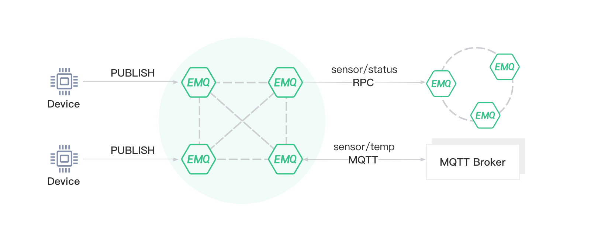

消息桥接
EMQ X 支持两种桥接方式:
RPC 桥接: 使用 Erlang RPC 协议的桥接方式，只能在 EMQ X 间使用
MQTT 桥接: 使用 MQTT 协议、作为客户端连接到远程 Broker 的桥接方式，可桥接到其他 MQTT Broker 以及 EMQ X Broker
其概念如下图所示:

发布者可通过桥接将消息发布到远程的 Broker:
EMQ X 根据不同的 name 来区分不同的 bridge。可在 etc/plugins/emqx_bridge_mqtt.conf 中添加 Bridge:
bridge.mqtt.aws.address = 211.182.34.1:1883
bridge.mqtt.huawei.address = 54.33.120.8:1883
该项配置声明了两个 bridge，一个名为 aws，另一个名为 huawei，并分别指向响应的服务地址，使用 MQTT 方式桥接。
如果该配置的值是另一个 EMQ X 的节点名，则使用 RPC 方式桥接:
bridge.mqtt.emqx2.address = emqx2@57.122.76.34
使用桥接功能需要启动 emqx_bridge_mqtt 插件:
$ emqx_ctl plugins load emqx_bridge_mqtt
ok
RPC 桥接的优缺点
RPC 桥接的优点在于其不涉及 MQTT 协议编解码，效率高于 MQTT 桥接。
RPC 桥接的缺点:
RPC 桥接只能将两个 EMQ X 桥接在一起（版本须相同），无法桥接 EMQ X 到其他的 MQTT Broker 上
RPC 桥接只能将本地的消息转发到远程桥接节点上，无法将远程桥接节点的消息同步到本地节点上
RPC 桥接举例
假设有两个 emqx 节点:
| 名称 | 节点 | MQTT 端口 |
|---|---|---|
| emqx1 | emqx1@192.168.1.1 | 1883 |
| emqx2 | emqx2@192.168.1.2 | 1883 |
现在我们要将 emqx1 桥接到 emqx2。首先需要在 emqx1 的 etc/plugins/emqx_bridge_mqtt.conf 配置文件里添加 Bridge 配置并指向emqx2:
bridge.mqtt.emqx2.address = emqx2@192.168.1.2
接下来定义 forwards 规则，这样本节点上发到 sensor1/#、sensor2/# 上的消息都会被转发到 emqx2:
bridge.mqtt.emqx2.forwards = sensor1/#,sensor2/#
如果想要在消息转发前给 emqx2 之前，给主题加上特定前缀，可以设置挂载点:
bridge.mqtt.emqx2.mountpoint = bridge/emqx2/${node}/
挂载点利于 emqx2 区分桥接消息和本地消息。例如，以上配置中，原主题为 sensor1/hello 的消息，转发到 emqx2 后主题会变为 bridge/emqx2/emqx1@192.168.1.1/sensor1/hello。
MQTT 桥接举例
MQTT 桥接是让 EMQ X 作为 MQTT 客户端连接到远程的 MQTT Broker。
首先需要配置 MQTT 客户端参数:
远程 Broker 地址:
bridge.mqtt.aws.address = 211.182.34.1:1883
MQTT 协议版本，可以为 mqttv3、mqttv4 或 mqttv5 其中之一:
bridge.mqtt.aws.proto_ver = mqttv4
MQTT 客户端的 clientid:
bridge.mqtt.aws.clientid = bridge_emq
MQTT 客户端的 username 字段:
bridge.mqtt.aws.username = user
MQTT 客户端的 password 字段:
bridge.mqtt.aws.password = passwd
Keepalive 设置:
bridge.mqtt.aws.keepalive = 60s
然后是客户端的 clean_start 字段，有些 IoT Hub 要求 clean_start（或 clean_session) 字段必须为 true:
bridge.mqtt.aws.clean_start = true
可设置桥接断线重连间隔:
bridge.mqtt.aws.reconnect_interval = 30s
如需使用 TLS 连接，可以设置 bridge.mqtt.aws.ssl = on 并设置 TLS 证书:
bridge.mqtt.aws.ssl = off
bridge.mqtt.aws.cacertfile = etc/certs/cacert.pem
bridge.mqtt.aws.certfile = etc/certs/client-cert.pem
bridge.mqtt.aws.keyfile = etc/certs/client-key.pem
bridge.mqtt.aws.ciphers = ECDHE-ECDSA-AES256-GCM-SHA384,ECDHE-RSA-AES256-GCM-SHA384
bridge.mqtt.aws.tls_versions = tlsv1.2,tlsv1.1,tlsv1
接下来定义 forwards 规则，这样本节点上发到 sensor1/#、sensor2/# 上的消息都会被转发到远程 Broker:
bridge.mqtt.aws.forwards = sensor1/#,sensor2/#
还可指定 QoS1 与 QoS2 消息的重传间隔以及批量发送报文数:
bridge.mqtt.aws.retry_interval = 20s
bridge.mqtt.aws.max_inflight_batches = 32
如果想要在消息转发前给 aws 之前，给主题加上特定前缀，可以设置挂载点，详见 RPC 桥接举例 章节:
bridge.mqtt.aws.mountpoint = bridge/aws/${node}/
如果想让本地 Broker "拉取" 远程 Broker 的消息，可以向远程 Broker 订阅某些主题:
bridge.mqtt.aws.subscription.1.topic = cmd/topic1
bridge.mqtt.aws.subscription.1.qos = 1
EMQ X 桥接缓存配置
EMQ X 的 Bridge 拥有消息缓存机制，当 Bridge 连接断开时会将 forwards 主题的消息缓存，等到桥接恢复时，再把消息重新转发到远程节点上。缓存机制同时适用于 RPC 桥接和 MQTT 桥接。
设置缓存队列总大小:
bridge.mqtt.aws.queue.max_total_size = 5GB
将消息缓存到磁盘的某个路径（如不设置，则仅缓存到内存）:
bridge.mqtt.emqx2.queue.replayq_dir = data/emqx_emqx2_bridge/
设置单个缓存文件的大小，如超过则会创建新的文件来存储消息队列:
bash
bridge.mqtt.emqx2.queue.replayq_seg_bytes = 10MB